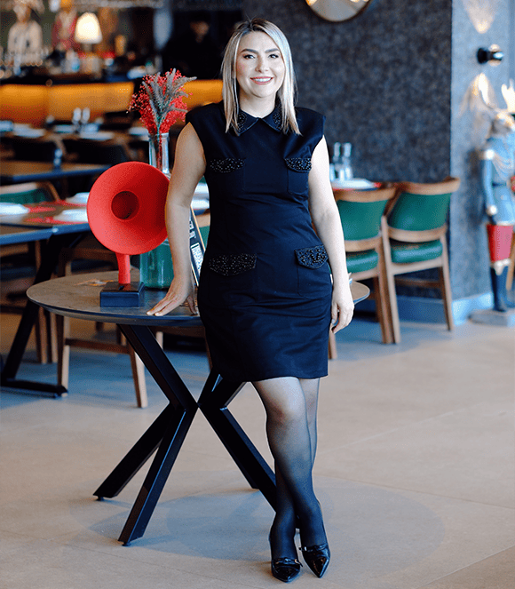

1978 yılında Adana'da doğan Doç. Dr. İlknur Banlı Cesur, çocuk cerrahisi alanındaki 20 yıllık tecrübesiyle, yenidoğan döneminden ergenliğe kadar uzanan geniş bir yelpazede şifa sunmaktadır.
Meslek hayatı boyunca sadece hastalıkları tedavi etmeyi değil, aynı zamanda çocukların yaşam kalitesini artırmayı, aileleri doğru ve anlaşılır şekilde bilgilendirmeyi ve güvenli bir tedavi süreci sunmayı amaçlamıştır. Bilimsel çalışmaları ve akademik yolculuğu, hekimlik pratiğinin ayrılmaz bir parçasıdır.
Adana'da doğdu. Lise öğrenimini Adana Kız Lisesi'nde başarıyla tamamladı.
Kayseri Erciyes Üniversitesi Tıp Fakültesi'ne girdi ve 2004 yılında mezun oldu.
Çukurova Üniversitesi Çocuk Cerrahisi Anabilim Dalı'nda uzmanlık eğitimini tamamladı.
Adana Numune Eğitim ve Araştırma Hastanesi bünyesinde çalışma hayatına devam etti.
SBÜ Adana �ehir Hastanesi Çocuk Cerrahisi Anabilim Dalı'nın kuruluşuna katkı sağladı.
2023 yılında Doçent ünvanını aldı ve SBÜ bünyesinde Doçent Doktor olarak çalıştı.
Mayıs 2025 itibarıyla Ortadoğu Hastanesi bünyesinde hasta kabulüne devam etmektedir.
“Gerçekten çok iyi bir doktor, kızımla çok güzel ilgilendi. Adana'nın en iyi doktorlarından biri İlknur Hanım.�
“Çok iyi ilgilenen sevecen bir doktor, herkese tavsiye ederim.�